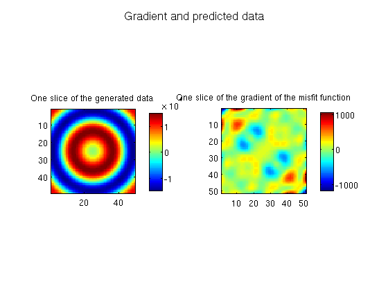

Contents
3D constant-density acoustic frequency-domain modeling: WaveEquationFD function
This script aims at demonstrating the simplest possible use of the forward modeling kernel using WaveEquationFD function. As usual, this script starts cleaning the enviroment and opening the log file
The new version of the code is rather verbose if the optional parameter flog is passed to ForwardFD; it prints information both on the screen and on the log file. If multiple Matlab workers are available, only the master worker prints the information while the other works ignore it.
Also the new code is very simple and requires virtually no set up other than reading the data itself. The new routine fixes several issues present in the legacy version such as
- automatic and abstract use of PML
- properly rounded (up) grid spacing for the computational grid to satisfy stability conditions.
- dynamic computational grid chosen depending on the frequency - the user does not need to manually shrink/stretch the model for lower/higher frequency.
- Computed wavefields match analitical wavefields
- Fixed the sign of the wavefield - legacy code produces -conj(.) of the expected data
clear vfile='../data/m_true.rsf'; dfile='../data/Dobs.rsf'; flog = fopen('../results/demo_WaveEquationFD_log','w'); opts.par_solver.tol = 1e-5; % Read data plog(flog,'* Reading data... \n'); [model.v,model.nv,model.dv,model.ov] = rsf_read_all(vfile); [acq.data,acq.nd,acq.dd,acq.od] = rsf_read_all(dfile); model.unit = 'm/s'; % Create sources for synthetic data plog(flog,'* ',prod(acq.nd(4:6)),' shots read; drawing receivers grid...\n'); [ acq.xrec,acq.yrec,acq.zrec,... acq.xsrc,acq.ysrc,acq.zsrc, acq.freq] = odn2grid(acq.od,acq.dd,acq.nd); acq.sources = speye( prod(acq.nd(4:6)) ); % Call modeling kernel [f, g, d_pred] = WaveEquationFD(model, acq, opts, flog);
* Reading data... * 81 shots read; drawing receivers grid... * Start modeling...: * Frequency 1 of 3: 2Hz * Obtaining discrete operator... * Physical domain: * ================== * vmin: 3.6e+03 * vmax: 4.5e+03 * Size: [5e+03 5e+03 2e+03] m³ * [ 51 51 21 ] points with grid spacing of [100 100 100] * Computational grid * ================== * n: [ 18 18 8 ] = 2.59e+03 * npml: [ 8 8 8 ], Total: 2.77e+04 * d: [ 294 294 286 ] * f: 2 Hz * nlam: 6 (effective: 6.12) * Discretizing Helmholtz operator with Operto et al. 27points stencil... done in 0.201 seconds * Obtaining the derivative of the discrete operator... * System size: 2.77e+04 - Number of shots: 81 * --------------------------------------------------- * Frequency 2 of 3: 4Hz * Obtaining discrete operator... * Physical domain: * ================== * vmin: 3.6e+03 * vmax: 4.5e+03 * Size: [5e+03 5e+03 2e+03] m³ * [ 51 51 21 ] points with grid spacing of [100 100 100] * Computational grid * ================== * n: [ 35 35 15 ] = 1.84e+04 * npml: [ 8 8 8 ], Total: 8.06e+04 * d: [ 147 147 143 ] * f: 4 Hz * nlam: 6 (effective: 6.12) * Discretizing Helmholtz operator with Operto et al. 27points stencil... done in 0.0922 seconds * Obtaining the derivative of the discrete operator... * System size: 8.06e+04 - Number of shots: 81 * --------------------------------------------------- * Frequency 3 of 3: 6Hz * Obtaining discrete operator... * Physical domain: * ================== * vmin: 3.6e+03 * vmax: 4.5e+03 * Size: [5e+03 5e+03 2e+03] m³ * [ 51 51 21 ] points with grid spacing of [100 100 100] * Computational grid * ================== * n: [ 51 51 21 ] = 5.46e+04 * npml: [ 8 8 8 ], Total: 1.66e+05 * d: [ 100 100 100 ] * f: 6 Hz * nlam: 6 (effective: 6) * Discretizing Helmholtz operator with Operto et al. 27points stencil... done in 0.22 seconds * Obtaining the derivative of the discrete operator... * System size: 1.66e+05 - Number of shots: 81 * ---------------------------------------------------
Plotting Results
Simply plots the data generated by both forward modeling kernels. They should produce similar results in most cases. The legacy forward modeling kernel should produce some spurious reflections for some frequencies and some models, but in this example they are not visible.
figure; subplot(1,2,1); imagesc(squeeze(real(d_pred(:,:,1,ceil(acq.nd(4)/2),... ceil(acq.nd(5)/2),... ceil(acq.nd(6)/2),1)))); axis image; colorbar; title(['One slice of the generated data']); subplot(1,2,2); imagesc(squeeze(real(g(:,:,ceil(model.nv(3)/2))))); axis image; colorbar; title(['One slice of the gradient of the misfit function']); suptitle('Gradient and predicted data'); fclose(flog);